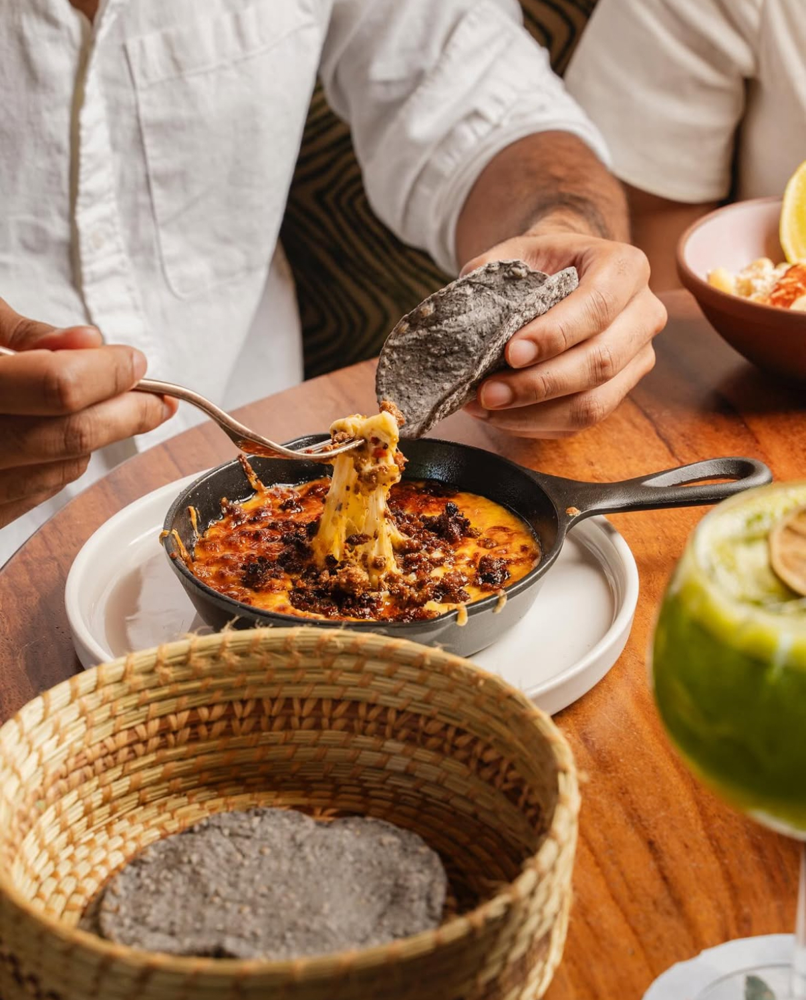
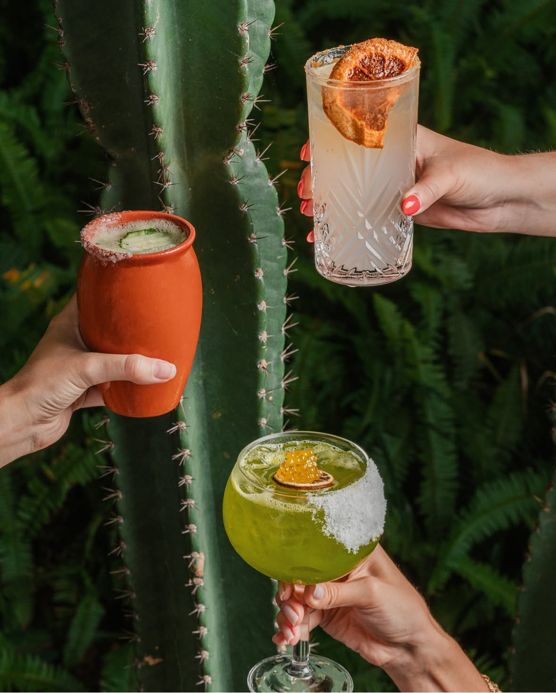

Cocina Mexicana de raíz Nestled in the lush tree canopy of Coconut Grove, our 6,000 sq. ft. indoor-outdoor restaurant & bar transports guests to Mexico with its artistic design, cacti garden, and lively ambiance. Watch tortillas handcrafted daily from imported Oaxacan criollo corn, enjoy toasted chips over a cherry wood fire, and explore over 400 mezcales and tequilas. We honor tradition with classic recipes while unveiling hidden gems from Mexico’s markets and pueblos—flavors passed down for generations.
Tequila & Mezcal | Food


Hours
Open for pickup, delivery, indoor and outdoor dining. Monday - Wednesday 12PM - 11PM Thursday - Saturday 12PM - 1AM Sunday 12PM - 11PM